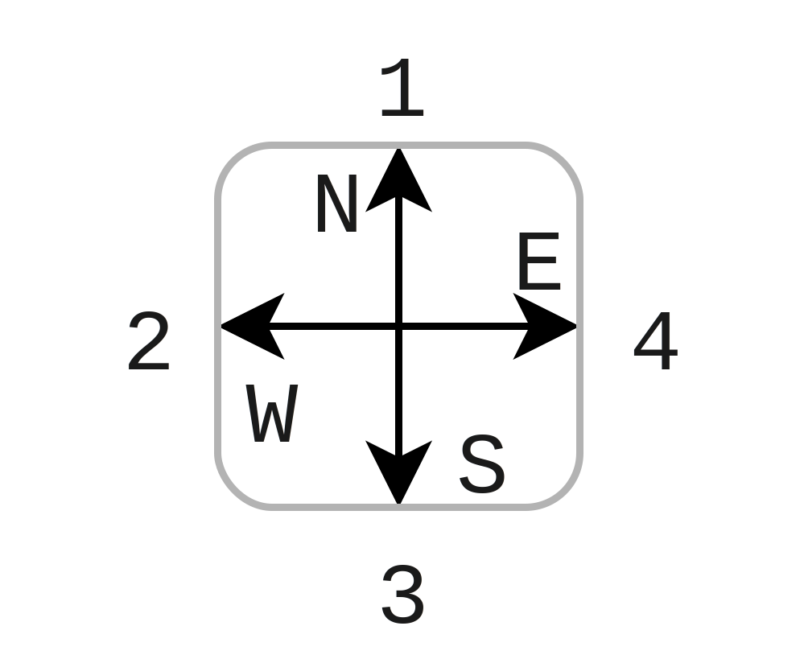

Mobility¶
MONSTeR currently supports 2 mobility model
- Random walk Pedestrian
- Random walk Pedestrian Indoor
Directions are defined as
{kind=link}

-
class
mobility.MMobility(scenario, velocity, seed, Param)¶ Directions defined as:
- 1 = N
- 2 = W
- 3 = S
- 4 = E
-
randomWalkPedestrian()¶ Computes a trajectory with pedestrian type movement. Uses a state machine approach to randomize the walk. Turns and crosses are based on turning and crossing times, as well as turn and crossing distances. These are set in
MMobility.setParameters()
-
randomWalkPedestrianIndoor()¶ Todo
Create distribution of movement and still states
Todo
Add turning inside building, turning is currently only done if the building boundaries are exceeded.
-
setParameters(Param)¶ Sets parameters for mobility, default values are given as
- Road width = 10m
- Lane width = Road width / 3
- Wall distance = 1m
For the scenario of pedestrian the parameters are given as
- pedestrianTurnPause = 0.02 s
- pedestrianCrossingPause = 5 s
- turningDistance = 2 * wall distance
- crossingDistance = road width + 2*wall distance
- Indoor = if scenario is given